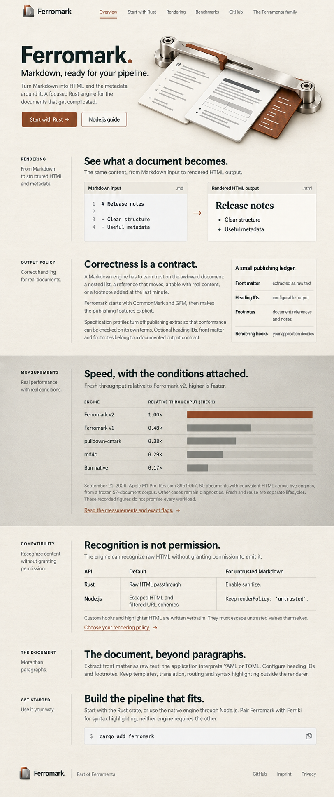
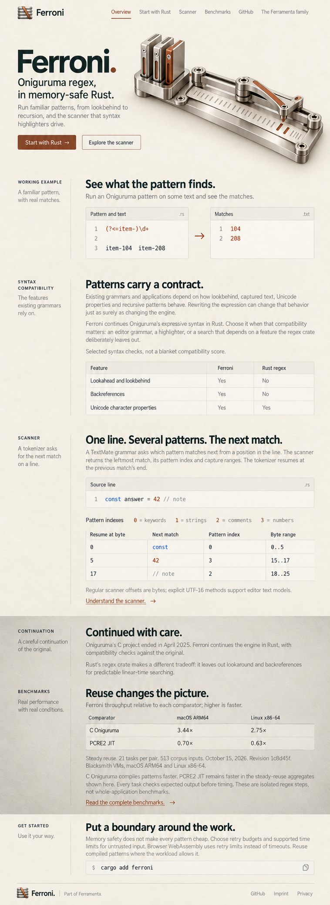
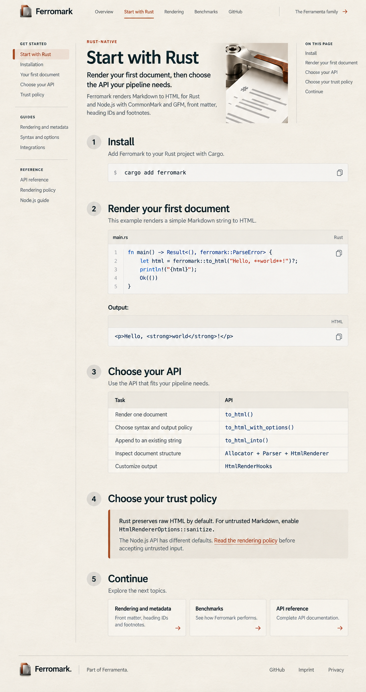
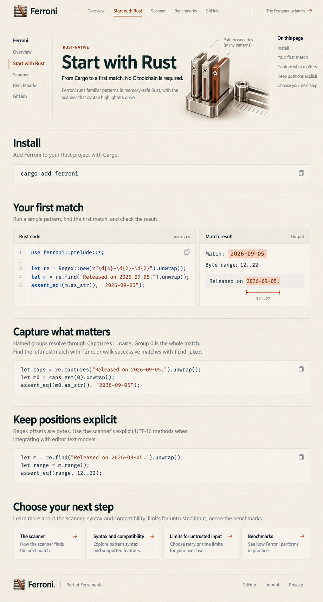
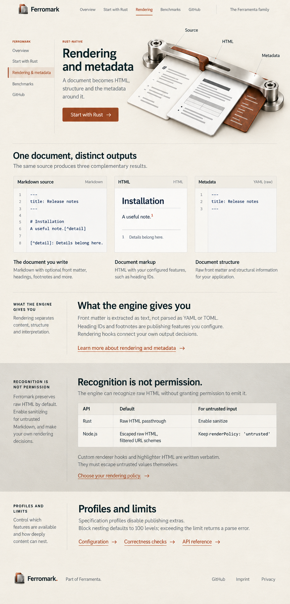
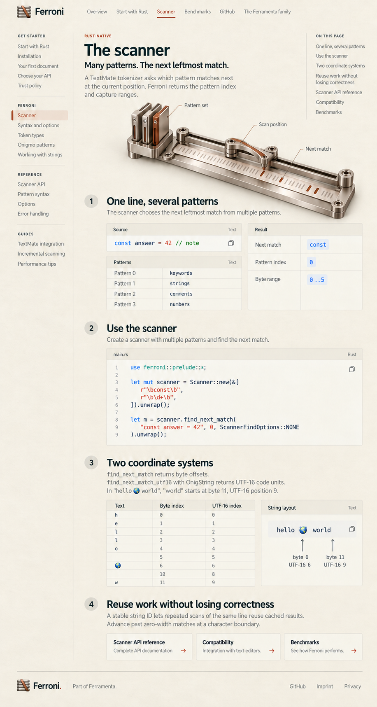
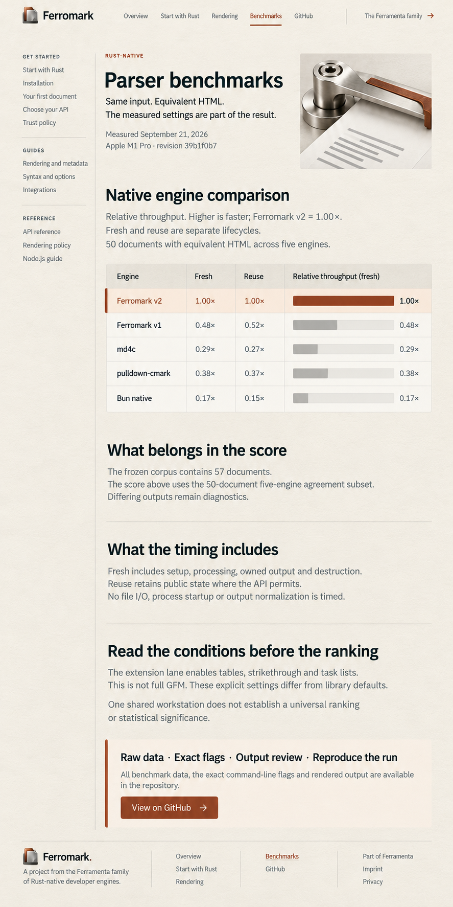
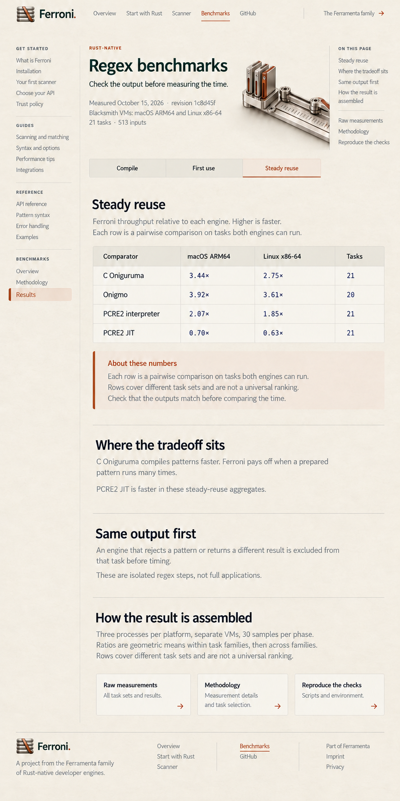

Ferromark · Overview
Design 39
The approved narrow-margin homepage layout, warm beige paper, matte pewter and rust-brown oxide, carried through both products and their core documentation.
Ferromark and Ferroni each have an overview, getting started, core-function explainer and benchmarks. All images, source copy, prompts and supporting assets are saved in this directory.
Current HTML designs: Ferramenta and all seven engines
The approved homepage direction: short introductions in the left margin, broad reading and evidence, warm paper and pewter.

Design 39

Design 40
Installation, the first working example, explicit results and the next step. One documentation family for both products.

Design 41

Design 44
Rendering and metadata for Ferromark; scanning and coordinate systems for Ferroni. Meaningful instruments and worked specimens.

Design 42

Design 45
Recorded evidence, clear comparisons and conditions that remain attached to the figures.

Design 43

Design 46
The supporting kit includes two transparent instruments, both logo and favicon export families, and reusable paper and pewter texture masters.